Larger forms. Clearer materials.
All 22 scenes retain their own geometry and motion. This pass reduces small repetition, enlarges important shapes and gives reflections, translucency and shadow depth more visible surface.
The left image shows the previous version. The right is a refreshed five-second recording. Before and after start at approximately the same animation time. Glass and subsurface lighting remain real-time approximations.
Home
Soft hallway
Larger wall cells and longer bays; removed the second tiny hex layer and softened wood grain. Warm hallway identity and forward travel remain.
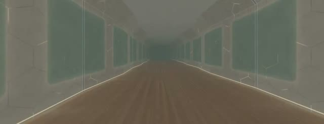
BeforeLight atrium
Broader glass ribs and longer spacing between arches. The colonnade stays open and keeps its continuous forward camera.
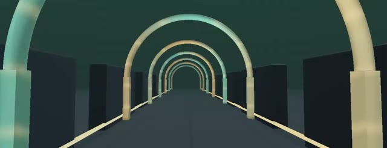
BeforeArcade
Arcade machines
Cabinets are 15% larger, with wider spacing and a closer view. CRT scanlines and brushed grain are calmer; joysticks, controls and animated games remain.
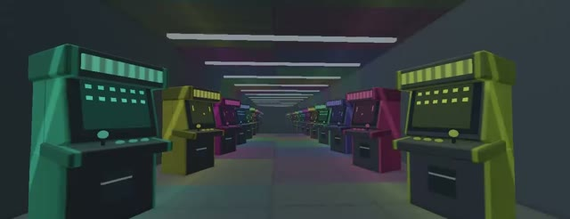
BeforePinball lounge
Closer framing and fewer bright playfield lines. Three machines, rolling balls, glass bumpers and score displays remain.
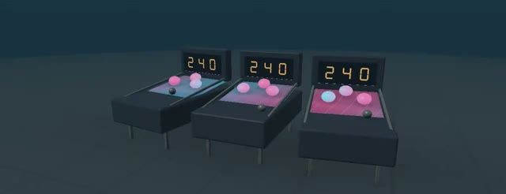
BeforeOpensource
Living Lightning
Broader, more widely spaced tendrils and larger crystals; reduced high-frequency jitter. Pink electrical pulses remain.
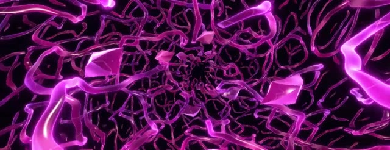
BeforeLuminous Roots
Thicker roots with broader, fewer bark ridges. Warm colors and flowing root connections remain.
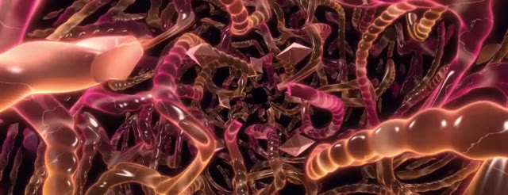
BeforeFractal Coral
Larger branches and perforations replace tiny lace. The porous coral network remains visibly distinct from smooth glass.
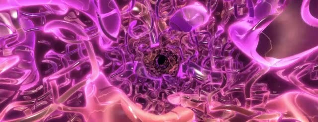
BeforeRibbon Vortex
Three broad spiral repetitions replace five thin ones. The twisting ribbon silhouette remains.
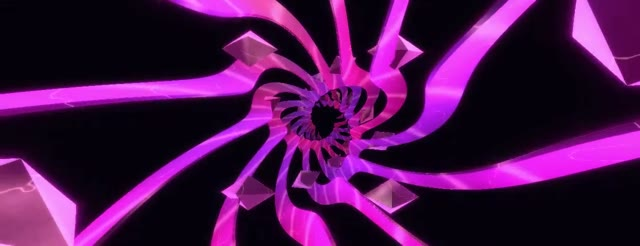
BeforeCrystal Mycelium
Thicker main filaments, a coarser secondary web and larger crystals. The branching network remains more intricate than the other scenes.
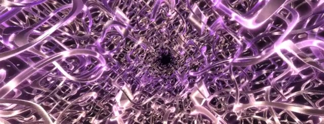
BeforeRecursive Bloom
Two deeper layers replace three close layers; larger petals and fewer cuts. The radial blooming structure remains.
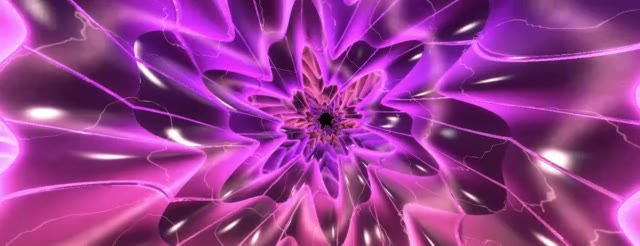
BeforeMolten Glass
Broader connected glass forms with fewer secondary tubes. Internal amber light, absorption and glossy surfaces remain.
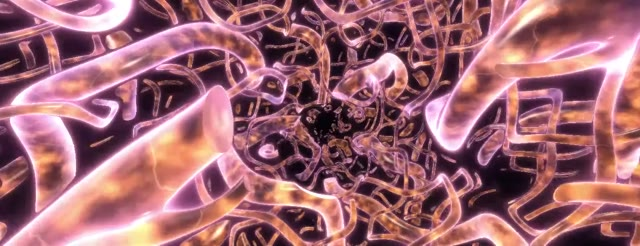
BeforeNeon Mandelbulb
Larger, more separated bulbs and four recursion steps instead of five. Power-eight fractal lobes remain.
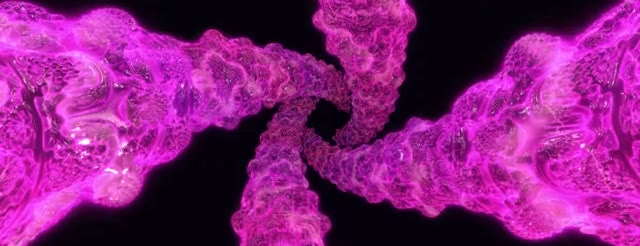
BeforeAurora Weave
Two broad flowing sheets replace three tightly folded sheets. Cyan light, thin surfaces and fluid folding remain.
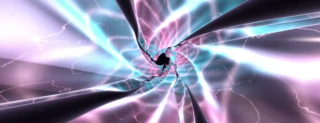
BeforeFractal Cathedral
Wider-spaced main arches, thicker ribs and fewer secondary ribs. The architectural vault and pillars remain.
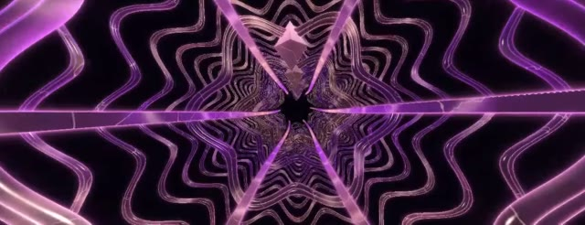
BeforeServices
Assembly bench
Closer view of the three linked assemblies. Their animated layers and connecting bus remain intact.
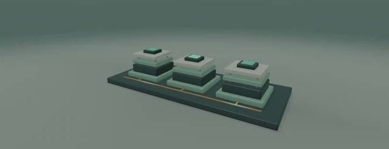
BeforeSignal foundry
Larger framing and fewer, thicker module bands. Three orbiting modules retain their shared central core.
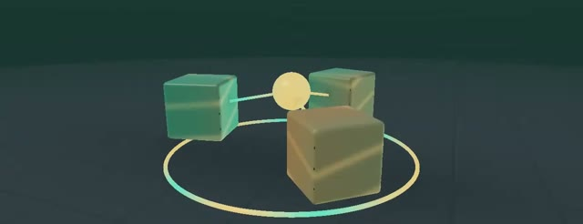
BeforePortfolio
Sculpture gallery
Closer view; the five thin plates become three thicker plates. Crystal, orbital instrument and layered sculpture stay distinct.
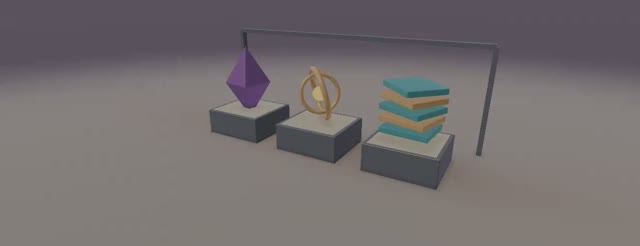
BeforePrismatic garden
Three broader glass petals replace five thin petals on each sculpture. Separate rotation and translucent shading remain.
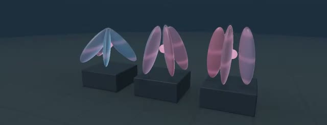
BeforeTeam
Idea constellation
Larger central light, contributor bulbs and curved links. All six contributors and their motion remain.
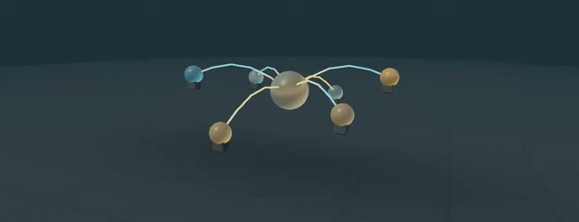
BeforeContact
Connected nodes
Wider cell spacing, larger nodes and thicker links reduce distant clutter. Animated endpoints and forward traversal remain connected.
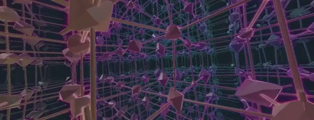
BeforeResonance rings
Thicker glass portals, metal rims and signal beads. Three connected rings retain their moving signals.
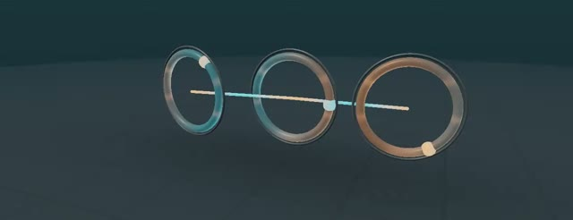
Before